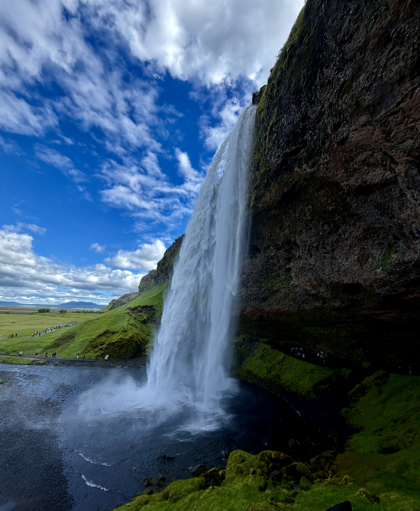
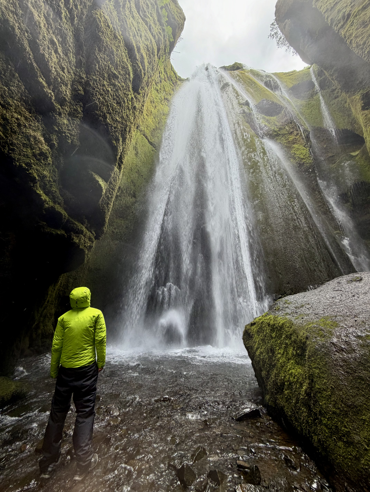

June 2026

Gljufrafoss - Often seen as the main attraction drawing in day tourists from Reykjavik as well as those exploring the island by camper van.

Gljúfrabúi - A smaller sister fall to the famous Gljufrafoss, just a short walk away contains a equality impressive fall that you can get up close to.